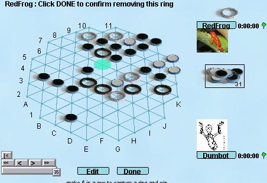

Yinsh
Yinsh is probably the easiest of the GIPF games to learn. The
goal of the game is to capture three rings of your own
color. You first place five rings on the board, then each
move pick a ring to move. Moving a ring leaves a chip behind, and
changes the color of all the chips it passes over. Whenever a row
of 5 chips is created, they are removed from play, along with a ring of
the same color. There are a few subtleties in the rules, but
that's the basic idea.
This looks vaguely similar to Othello, but it is much subtler because
removing the chips creates new open space, and removing a ring
(progress toward winning) weakens you.
Robots: The robots
for yinsh are smart enough to win against beginners, but can be beaten
once you get used to the colors changing. Basicly the robots are
very good at keeping track of all the flipping, but relatively clueless
about overall strategy.
|

|